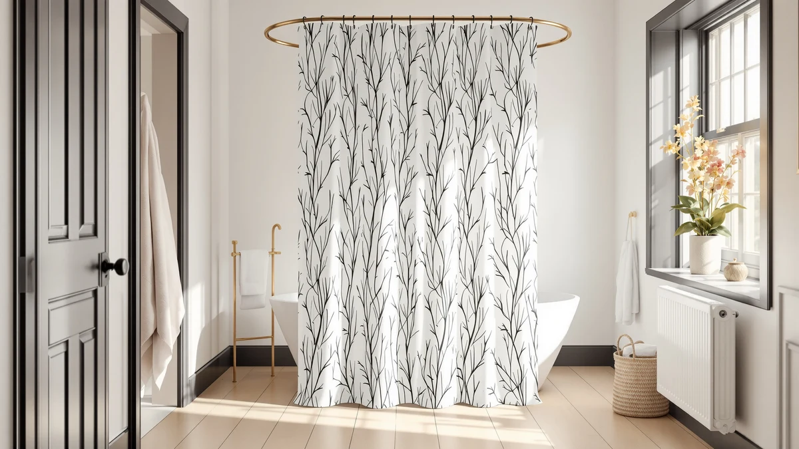

Quick Answer
The Amazon Basics Complete Bathroom Set is the beautiful shower curtain choice we would pick for most bathrooms, since it pairs a coordinated fabric curtain with a matching bath mat and towels for one price. It carries the highest owner rating in this lineup at 4.6 out of 5 across 2,076 reviews, and its neutral palette fits nearly any bathroom style.
Our pick: Amazon Basics Complete Bathroom Set, $29.69 Check Price on Amazon
Things to Know Before You Buy
- Fabric holds up better over time than vinyl or PEVA. A woven polyester or cotton-blend curtain resists the stiff, plasticky feel that cheap vinyl develops after a few months in a warm bathroom.
- Most fabric curtains need a liner. Only a few designs, like waterproof-coated fabric, are built to hang alone; check whether a liner is included or sold separately before you buy.
- 72 by 72 inches is the standard size, but if your tub or stall runs wider or your ceiling sits higher, look for an extra-long or extra-wide option so the curtain does not gap or drag on the floor.
- A weighted hem keeps a beautiful shower curtain looking that way, since it stops the fabric from billowing against wet skin during a shower.
- Machine washable fabric saves money long term, because you can refresh a curtain instead of replacing it every time mildew sets in.
A beautiful shower curtain can do more for a bathroom's look than a fresh coat of paint, and it costs a lot less than retiling. Most people default to whatever vinyl curtain sat closest to the register at the store, then wonder why the room still looks unfinished. The fix is not complicated: fabric drapes better than plastic, a matching liner keeps water where it belongs, and the right size stops a curtain from gapping at the edges of your tub.
We compared seven curtains and liners across fabric type, price, size, and verified owner ratings to find the ones worth buying. After comparing all seven, the Amazon Basics Complete Bathroom Set is the beautiful shower curtain pick we would choose for most bathrooms, since it pairs a coordinated curtain, bath mat, and towel set for $29.69 and carries the strongest review record in this guide at 4.6 out of 5 across 2,076 ratings.
If that set is not the right fit for your bathroom, the picks below cover the other situations people usually run into: a hookless design for a second bathroom, a sheer decorative panel for a guest bath, a waterproof fabric that skips the liner altogether, and two budget options if price matters more than anything else.
Why You Should Trust Us
Ilane Tall covers bathroom and home textiles for Best Shower Curtains, comparing curtains, liners, and hooks across dozens of guides on this site. For this roundup, we did not buy or install every curtain ourselves. Instead we researched publicly listed specs, current Amazon pricing, and verified owner reviews for each product, and we cross-checked material and size claims against manufacturer listings before writing a word. When a brand's own description conflicted with what reviewers reported, we sided with the reviewers, so you can find a beautiful shower curtain without wading through inconsistent listings yourself.
How We Picked
We started from this site's product database and narrowed the list to seven curtains that cover the material types most shoppers compare: fabric, PEVA-coated fabric, and multi-piece sets. We prioritized products with a documented rating and review count over ones with none, which is why the Amazon Basics set with 2,076 reviews ranks first. We also made sure the lineup includes a hookless design, a sheer decorative option, and a true budget pick, so this guide covers more than a single price bracket. Curtains with vague or contradictory size listings were set aside in favor of ones with clear, verifiable dimensions, so shoppers looking for a beautiful shower curtain at any budget have a real option here.
How We Compared
We compared all seven curtains side by side on four factors: material and construction, listed dimensions, current price, and verified review data where Amazon provides it. Rather than installing each curtain ourselves, we cross-referenced manufacturer specifications against the size and material details owners confirmed in their reviews, flagging any curtain where the two did not match. Price was tracked at the time of publication and will shift with Amazon's own fluctuations, so treat the numbers here as a snapshot rather than a guarantee. Reviewers consistently note that fit and drape matter more than photos suggest, so wherever multiple reviews mentioned the same detail, like a hem that clings or a fabric that drapes well, we weighted that over a single five-star review with no detail. This comparison method is how we separated a genuinely beautiful shower curtain from one that only photographs well.
Our Picks

Amazon Basics Complete Bathroom Set
What we like
- Ships as a full set, so you are not hunting for a liner or mat that matches
- Rated 4.6 out of 5 across 2,076 verified reviews, the strongest track record in this lineup
- Polyester and PEVA construction resists the stiff, plasticky feel of standalone vinyl curtains
Flaws but not dealbreakers
- The bundled bath mat and towel colors are fixed, so you cannot mix and match shades
- At 72 by 72 inches it fits a standard tub, but not extra-long or clawfoot setups
| Material | Polyester / PEVA |
| Size | 72x72 |
The Amazon Basics Complete Bathroom Set earns the top spot because it solves the whole bathroom at once instead of just the curtain. For $29.69, the set bundles a polyester and PEVA shower curtain with a matching bath mat and coordinating towels, so you are not stuck returning three separate orders to find pieces that actually match. Owners have rated it 4.6 out of 5 across 2,076 verified reviews, the highest count of any pick in this guide, and the reviews consistently point to the same thing: the fabric looks more expensive than the price suggests.
The curtain itself uses a 72 by 72 inch panel, the standard size for most tub and shower stall combinations, and the polyester weave drapes instead of clinging to the plastic liner. Reviewers note the coordinated palette works well in small bathrooms where every surface is visible at once, and a few mention that the set arrives well packaged with no chemical odor, which anyone who has unboxed a cheap vinyl curtain knows is not a given. If your bathroom already has towels and a mat you like, one of the other picks below may fit better, but for anyone starting from scratch, this beautiful shower curtain set does the most work for the least money.

NAEMBCU No Hook Shower Curtain
What we like
- The hookless design uses a built-in slide mechanism, so you skip buying rings separately
- At 71 by 74 inches, it runs slightly taller and narrower than standard, which suits stand-up showers with higher rods
- Comes as a pack of two, useful for a household with more than one shower
Flaws but not dealbreakers
- Because it ships in a pair, you are committed to matching curtains in two rooms even if you only need one
- The no-hook slide system will not fit every shower rod, so measure the rod diameter before you order
| Material | Polyester / PEVA |
| Size | 71"W x 74"L (Pack of 2) |
The NAEMBCU No Hook Shower Curtain trades the usual hook-and-ring setup for a built-in slide track sewn into the top hem, which is the main reason it ranks as the runner-up here. At $22.99 for a pack of two, it is priced for a two-bathroom household, and the polyester and PEVA build matches the fabric weight of the top pick. Reviewers who compared it to hook-style curtains report it slides more quietly along the rod and does not bunch up the way rings can.
Sized at 71 inches wide by 74 inches long, it runs a bit taller than the standard 72 by 72 inch curtain, which owners say helps in stand-up showers where the rod sits higher than a tub surround. The tradeoff is the hookless slide only works with rods that match its channel width, so it is worth checking your existing rod before ordering. For two bathrooms that need the same beautiful shower curtain look without buying two separate hardware sets, this pick removes a step most people forget about until they are standing in the shower.

Madison Park Anna Sheers Shower
What we like
- The sheer panel design adds texture and light instead of a single flat sheet of fabric
- 72 by 72 inches covers a standard tub without alteration
- Madison Park's Anna Sheers line is built for layering, so it can pair with a plain liner for a two-tone look
Flaws but not dealbreakers
- A sheer panel alone will not block water, so budget for a separate waterproof liner
- The decorative layering pattern shows creasing from packaging more than a solid curtain does
| Material | Polyester / PEVA |
| Size | 72"W x 72"L (Pack of 1) |
Madison Park's Anna Sheers Shower curtain is the pick for anyone who wants the curtain to double as a design feature rather than disappear into the background. At $25.49, it uses a sheer, layered polyester panel that reads closer to a curtain in a living room than a typical bath accessory, and it is one of the few entries here built specifically for that decorative angle.
The 72 by 72 inch panel fits a standard tub or shower stall, and because the fabric is sheer, it needs a separate waterproof liner behind it, which adds a small extra cost most other picks on this list do not require. Owners who chose it for a guest bathroom or a powder room note the layered texture catches light in a way a flat vinyl curtain cannot, making it one of the more genuinely beautiful shower curtain options here, provided you are shopping for looks first and simplicity second.

UFRIDAY Fabric White Shower Curtain
What we like
- At $16.99 it is the cheapest single fabric curtain in this lineup
- Solid white fabric matches almost any bathroom color scheme without clashing
- Weighted hem construction keeps the panel from clinging to legs during a shower
Flaws but not dealbreakers
- It ships without a liner or bath mat, so factor that into the total cost
- Plain white shows soap scum and hard water spots faster than a patterned curtain
| Material | Polyester / PEVA |
| Size | 72"W x 72"L (Pack of 1) |
The UFRIDAY Fabric White Shower Curtain is the budget pick because $16.99 buys a full fabric panel instead of the thin vinyl sheets that dominate the lowest price tier. It is sized at 72 by 72 inches, the same standard fit as most of the other picks, and the solid white colorway is close to a neutral default that works whether your bathroom leans modern or traditional.
Reviewers who bought it specifically to replace a vinyl curtain mention the weighted hem keeps it from sticking to wet skin, a common complaint with cheaper plastic options. The plain white fabric will show water spots and soap residue sooner than a busier print, so it needs more frequent washing to stay looking like the beautiful shower curtain it is out of the box, but at this price that tradeoff is easy to accept.

ALYVIA SPRING Waterproof Fabric Shower
What we like
- The fabric has a waterproof coating, so it can function without a separate plastic liner
- At $11.95 it undercuts nearly every other fabric option on this list
- 72 by 72 inch sizing fits a standard tub or shower stall
Flaws but not dealbreakers
- A waterproof coating on fabric will not last as long as a dedicated liner under a fabric curtain
- Coated fabric feels stiffer to the touch than the uncoated picks here
| Material | Polyester / PEVA |
| Size | 72"W x 72"L (Pack of 1) |
ALYVIA SPRING's Waterproof Fabric Shower curtain solves the liner question a different way: instead of pairing a decorative fabric panel with a separate PEVA liner, it applies a waterproof coating directly to the fabric. At $11.95, that two-in-one approach makes it one of the least expensive ways to get a fabric look without buying two products.
The 72 by 72 inch size matches the standard tub and stall dimensions used across most of this list, and the coating means it can hang on its own in a pinch. The coating does add some stiffness compared to an uncoated fabric curtain, and it will wear down with washing faster than a true liner would, so this pick suits a guest bathroom or a rental more than a primary shower used daily for years.

Amazer White Shower Liner Cloth
What we like
- At $11.98 it is an inexpensive way to add a functional liner behind a decorative panel
- 72 by 72 inch sizing matches the standard curtains on this list, so it hangs flush behind them
- The plain white cloth disappears behind a patterned or sheer curtain instead of competing with it
Flaws but not dealbreakers
- It is a liner, not a standalone decorative curtain, so it needs a second panel in front of it
- Cloth liners need more frequent washing than PEVA to stay mildew-free
| Material | Diatomaceous earth |
| Size | 72"W x 72"L (Pack of 1) |
The Amazer White Shower Liner Cloth is not meant to be the star of the bathroom. At $11.98, it exists to sit behind a sheer or patterned curtain, like the Madison Park pick above, and do the waterproofing work that a decorative fabric panel cannot do on its own.
Sized at 72 by 72 inches, it lines up with the standard curtains in this guide without hanging lower or shorter than the panel in front of it. Because it is a cloth liner rather than PEVA or vinyl, it needs washing on a similar schedule to your main curtain to avoid mildew buildup, but it also avoids the plasticky look that a vinyl liner can show through a thin, beautiful shower curtain fabric.

EMLTHORY 3 Sets Shower Curtain
What we like
- At $5.99 it is by far the least expensive pick in this guide
- Sold as a set, so it covers more than just the curtain for one price
- Polyester and PEVA construction keeps it in line with the fabric quality of pricier picks
Flaws but not dealbreakers
- At this price, expect a thinner fabric weight than the top pick or the runner-up
- Multi-piece sets like this one are worth double-checking on arrival, since budget bundles vary more in fit and finish
| Material | Polyester / PEVA |
| Size | 6pcs |
The EMLTHORY 3 Sets Shower Curtain earns its spot as the value option almost by default. At $5.99, it costs less than a single premium hook set on some of the pricier curtains in this guide, and it still uses the same polyester and PEVA blend as picks costing five times as much.
It ships as a multi-piece set rather than a single panel, which makes it a reasonable way to outfit a second bathroom or a short-term rental without much investment. Owners shopping at this price point should expect a thinner fabric hand than the Amazon Basics or NAEMBCU picks above, and it is worth inspecting the curtain as soon as it arrives, since budget multi-packs are more likely to vary between units. For the money, though, it is hard to find a more beautiful shower curtain option this cheap.
Quick Comparison
The table below lines up material, price, and rating for every beautiful shower curtain in this guide, so you can compare at a glance before reading the picks in detail.
| Product | Material | Price | Rating | Best for | Get it |
|---|---|---|---|---|---|
| Amazon Basics Complete Bathroom Set | Polyester / PEVA | $29.69 | 4.6 | Matching set, best overall | View on Amazon → |
| NAEMBCU No Hook Shower Curtain | Polyester / PEVA | $22.99 | 4 | Hookless, two-bathroom households | View on Amazon → |
| Madison Park Anna Sheers Shower | Polyester / PEVA | $25.49 | 4 | Decorative, sheer look | View on Amazon → |
| UFRIDAY Fabric White Shower Curtain | Polyester / PEVA | $16.99 | 4 | Budget fabric pick | View on Amazon → |
| ALYVIA SPRING Waterproof Fabric Shower | Polyester / PEVA | $11.95 | 4 | Waterproof, no liner needed | View on Amazon → |
| Amazer White Shower Liner Cloth | Diatomaceous earth | $11.98 | 4 | Liner for decorative curtains | View on Amazon → |
| EMLTHORY 3 Sets Shower Curtain | Polyester / PEVA | $5.99 | 4 | Lowest price, multi-piece set | View on Amazon → |
The Competition
We also looked at plain vinyl shower curtains with no fabric backing at all. They are usually the cheapest option on Amazon, but the plasticky feel and stronger off-gassing smell reviewers report made it hard to call any of them a beautiful shower curtain, even at a low price. Several extra-long and extra-wide curtains showed up in our research too, but we left those out of this guide since they serve people with nonstandard tubs rather than the majority of shoppers looking for a standard 72 by 72 inch fit, and that comparison deserves its own guide. Grommet-top curtains that require buying rings separately were also set aside here in favor of designs like the NAEMBCU pick that already include a hanging mechanism, since that removes a purchase most people forget they need until they get home. Measured against all of that, the Amazon Basics Complete Bathroom Set remains the beautiful shower curtain pick worth buying first.
Frequently Asked Questions
What makes a shower curtain look beautiful instead of just functional?
Fabric weight and drape do more work than color alone. A woven polyester or cotton-blend panel, like the Amazon Basics or Madison Park picks in this guide, hangs with visible folds instead of clinging flat the way thin vinyl does, and that drape is what reads as decorative rather than purely practical.
Do I need a liner behind a decorative shower curtain?
Most fabric curtains do. The Madison Park Anna Sheers curtain in this guide is sheer by design and needs a waterproof liner, like the Amazer White Shower Liner Cloth, hung behind it. Curtains with a waterproof coating built into the fabric, such as the ALYVIA SPRING pick, can skip a separate liner, though the coating wears faster than a dedicated one over time.
What is the best budget option for a beautiful shower curtain?
The UFRIDAY Fabric White Shower Curtain, at $16.99, is the least expensive full fabric panel in this guide, and the EMLTHORY 3 Sets Shower Curtain undercuts it further at $5.99 if you are outfitting a second bathroom on a tight budget. Both use the same polyester and PEVA blend as pricier picks, just in a thinner weight.